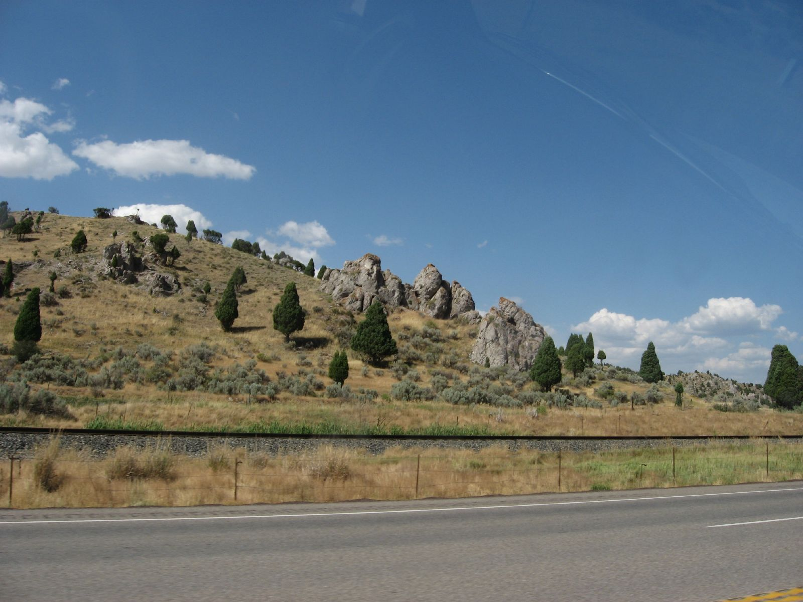

Article
by Mike Price, EastIdahoNews.com
 One of my favorite things of this little town is the name, because the name comes from a geyser with carbonated water, isn't that amazing?
According to
book “Tosoiba,” written by Camp Meads with the Daughters of Utah Pioneers, the springs provided fresh water to the early Native Americans who drank it for the medicinal qualities they believed it had.
Native American women used the
powdery buildup around the springs to clean clothing and bleach leather. Instead of the Native American name for the area, trappers who came through called it Beer Springs. In 1842, Captain. John C.Fremont wrote in his journal about visiting
Beer Springs for the first time and described where the name Beer Springs came from.